Version 1.1 · Project Whitepaper
Social Networking, Digital Ownership, Wallet Infrastructure, and the Creator Economy.
EraX Digital is an independent Web3 technology company developing a connected digital ecosystem that brings together social networking, digital ownership, wallet infrastructure, and creator-focused experiences. The tagline is Connect. Create. Own.
This whitepaper describes a proposed SocialFi ecosystem. Social networking, digital identity, wallet connectivity, creator monetization, and blockchain-based ownership are intended to sit in one product family without pretending that every click is a financial transaction.
Ethereum Mainnet is the planned Layer 1 for ownership and settlement. Base, an Ethereum Layer 2, is the planned network for creator payments, subscriptions, and other everyday transactions. Base is not described as an independent Layer 1.
EraX Social is the current social product. EraX Wallet and EraX Creator are planned. EraX Assets is a future possibility and is not operational. The public plan runs from 2026 through 2028. The ERAX token is specified and is not deployed, audited, or offered for sale.
Readers should treat diagrams in this document as conceptual. A box in a diagram is a responsibility the design assigns, not a server, contract, or vendor that has been deployed. Where a choice is still open — custody model, RPC provider, indexer, sign-in protocol, media storage — the text says so.
Digital communities already exist inside large social platforms. Those platforms proved that people will publish, follow, and gather around creators. They also concentrated distribution, identity, and monetization in accounts that the platform can limit or remove.
Blockchains added a different primitive: a user can hold keys and authorize a transaction that does not depend on a single application database. Wallets, fees, and unfamiliar signing prompts made that primitive hard to use. Most people do not want a lesson in gas in order to read a post.
Creators, meanwhile, are asked to assemble a separate stack for audience, membership, and payment. The pieces work, but they do not feel like one product.
EraX Digital's proposal is to keep the social experience familiar and to introduce wallet authorization only where ownership or payment is actually happening. EraX Social is available for accounts, posts, follows, comments, bookmarks, communities, and messages. Wallet, creator payments, and the token are not claimed beyond the limits in this paper.
2026 means foundation work that the company treats as done, plus the current EraX Social product. 2027 means intended wallet, creator, and testing work, not a dated public beta. 2028 means later ecosystem work, not a committed release.
The long-term vision is a connected digital world where people, communities, and digital assets can interact, create value, and grow together. The practical mission is narrower: make Web3 easier to approach by keeping social software, ownership, and payment in one understandable system, and by refusing to describe unfinished work as finished.
The following are industry problems and design objectives. They are not findings from a private dataset and they are not accusations against a named competitor.
A person who wants to publish, talk to an audience, hold a wallet, and get paid often crosses several products. Each product has its own account, its own idea of identity, and its own failure mode. The design objective is one journey, not a claim that every existing product is unusable.
An audience, a profile, and a catalog of work can sit entirely inside an account the operator controls. Digital ownership, in the sense used here, is the ability to authorize selected records with a wallet the person controls. It is not a claim that a social graph can or should be moved on-chain in full.
Distribution and identity on a conventional social platform depend on that platform remaining willing and able to serve the account. A wallet address is a second kind of identifier. Using it does not remove the need for an application operator. It does mean that a payment or an ownership record can outlive a single screen.
Creators are often limited to the commercial formats a host already sells. The design objective for EraX Creator is a small, explicit set: paid access to an item, a subscription for a period, and a voluntary tip. That set is planned. It is not a marketplace that exists today, and it is not a promise of income.
Wallets ask people to choose a network, pay a fee, and approve a payload they may not understand. Those prompts are appropriate for moving value. They are a poor requirement for reading a feed. The design objective is to show a wallet only when the action needs one, and to show the network, destination, and amount before the person signs.
Web3 products sometimes teach the protocol before they offer a familiar task. EraX Digital's objective is the reverse order: a social task first, a wallet decision only when ownership or payment is the task. This is a product requirement for later implementation, not a usability study with published results.
The proposed ecosystem has five working ideas. Social networking gives people a place to publish and gather. Digital identity separates an account, a profile, and an optional wallet address. Wallet connectivity makes payment and ownership explicit. Creator monetization adds prices, subscriptions, and tips. Blockchain-based ownership is reserved for the records that benefit from a public transaction.
These parts are intended to feel like one journey. A person can join, post, and talk without a chain write. The same person can connect a wallet when they decide to pay or to show an address. The documentation for each product states the same boundary.
Account creation, posting, comments, communities, and messages are available in EraX Social. Paid posts, subscriptions, tips, and EraX Assets are not. The later steps are the product definition for 2027 and 2028.
Conceptual diagram. This is not a map of deployed infrastructure.
Conceptual diagram. This is not a map of deployed infrastructure.
Screens for reading, posting, connecting, and paying. This layer explains actions. It does not hold keys.
Feeds, communities, messaging, and publishing rules.
Accounts, sessions, and permissions. A future wallet sign-in would live here and would still be distinct from a payment signature.
Requests to an external wallet, display of an address, and handoff of a transaction for approval.
Off-chain storage for profiles, posts, messages, and settings. This layer is not deployed in the website repository.
The ERAX token contract is written as a fixed-supply ERC-20 and is not deployed. Later programs for selected payments and ownership events are still future work.
Base for frequent transactions and Ethereum Mainnet for settlement and ownership cases that justify Layer 1 cost.
The experience layer may ask the social layer for a feed and the wallet layer for an approval. It must not hold keys, and it must not invent a transaction the user did not review. The social layer may store posts and messages. It must not treat a like as a payment. The identity layer may open a session. A session is not a signature that moves value. The wallet layer may request an account and a signature from software the user already controls. A future contract may record a payment the wallet has signed. It should not be the database for private messages or media files.
The backend and data layer is the part a conventional application would run: accounts, posts, permissions, and files. This website repository does not contain that service. Naming the layer is not evidence that it is online.
The current social product, at https://erax-digital.vercel.app/, for accounts, posts, follows, comments, bookmarks, communities, and messages. Optional wallet sign-in can use an Ethereum or Solana signature. Creator subscriptions and on-chain payments are not in this build.
Conceptual diagram. This is not a map of deployed infrastructure.
A planned wallet experience for Ethereum and Base connectivity, digital asset visibility, and transaction authorization. The company does not claim a custodial or a non-custodial service until the implementation exists and is documented.
Conceptual diagram. This is not a map of deployed infrastructure.
A planned creator platform for profiles, content management, subscriptions, paid content, tipping, and creator payments.
Conceptual diagram. This is not a map of deployed infrastructure.
A potential future product focused on digital asset issuance and tokenization. It is not currently operational. It is not an investment product and it is not part of the current build sequence as a shipped service.
EraX Social owns the conversation: who posted, who replied, and which community the post belongs to. EraX Wallet owns the approval: which address, which network, and which payload the user agreed to sign. EraX Creator owns the commercial term: the price, the period, and whether access was granted. A screen may show all three, but the responsibilities stay separate so that a social click cannot hide a payment.
Four wallet words are easy to collapse, and this document does not collapse them. A connected external wallet is software the user already controls; the application requests a connection. A wallet interface is the set of screens that explain and display that request. A custodial wallet is a service that holds keys for the user. A non-custodial wallet is one where the user holds the keys. EraX Digital does not claim to operate either custody model. The planned work is an interface to a wallet the user brings, and even that interface is not shipped.
Conceptual diagram. This is not a map of deployed infrastructure.
Ethereum is the planned primary network. It is the Layer 1 reference for ownership, important contract operations, and settlement where the cost is acceptable. EraX Digital does not run Ethereum validators and does not publish a client diversity or staking operation.
Base is the planned Layer 2 for consumer transactions, creator payments, and subscriptions. Users would still approve transactions in a wallet and pay gas. Calling Base a Layer 2 is deliberate: it is not a new base chain owned by the company.
A Layer 1 transaction is executed and settled on Ethereum Mainnet. A Layer 2 transaction is executed in Base's environment and relies on Ethereum for its security relationship. Users still sign, and they still pay gas. Gas is the network fee, priced by demand on that network. It is not a subscription invented by EraX Digital. Placing everyday creator payments on Base is a cost and latency choice. It does not create a company chain, and it does not make Base a Layer 1.
An application prepares a transaction. The wallet displays it. The user signs or refuses. Only a signed transaction can be broadcast. A contract call, once a contract exists, is still just a transaction with data: the contract address, the function, and the arguments. No EraX contract address is published because no project contract is deployed from this repository. Examples in the developer documentation are labeled as sketches and must not be treated as source releases.
Interoperability, for the current strategy, means Ethereum and Base only. Moving value between them is a bridge operation provided by the networks' own infrastructure. EraX Digital does not offer a bridge, a wrapped asset, or a third network.
Conceptual diagram. This is not a map of deployed infrastructure.
Off-chain candidates are social feeds, likes, comments, messaging, discovery, and interface preferences. They benefit from low cost, ordinary access control, and the ability to remove abusive content.
On-chain candidates are wallet authorization, selected payments, creator subscriptions, and ownership records that should have a public history. They cost gas, they are public, and they are difficult to reverse.
| Trade-off | Off-chain | On-chain |
|---|---|---|
| Scalability | Application capacity | Network throughput and fees |
| User experience | Instant for local reads | Waiting for inclusion |
| Transparency | Depends on the operator | Public verification |
| Privacy | Can be restricted | Public by default |
This split is a proposal. It should be revised if the implementation chooses a different boundary.
A feed is read far more often than it is written, and a comment is not a transfer of value. Putting those writes on a public chain would charge a fee, publish the content to anyone who reads the chain, and make ordinary moderation much harder. Off-chain storage can be access-controlled, cached, and removed when a post breaks a rule. The operator of that storage is a point of trust. The document does not pretend otherwise.
A payment, a subscription receipt, or an ownership record is more useful if the user can see that a wallet authorized it and that the network included it. That history is public and difficult to reverse. The application can show a friendlier status, but the chain remains the record of the transfer. Media files and message bodies do not need that property, so they stay off the chain even when a payment unlocks them.
A creator participates by publishing work and, optionally, setting a price. Viewers can read free work, pay for an item, subscribe, or tip. Community discussion stays in the social product. The commercial term is visible before anyone pays.
A creator is an account with a public profile and a body of work. Free posts can circulate in EraX Social like any other post. A paid post carries a visible price and an access rule. The file or text that is being sold should be stored off-chain. What may later be recorded on Base is the payment, not the file.
A subscription is access for a stated period in exchange for a recurring payment. Renewal, cancellation, and a failed payment have to be defined before anyone is charged. They are not defined as a billing system today. A tip is a one-off payment and must not be implied by a like. Community discussion — replies, membership, conversation — stays a social function. Payment-gated communities, if they are offered later, have to show the price before a person joins.
Creator payments are intended to settle on Base because they are smaller and more frequent than the ownership events reserved for Ethereum Mainnet. No asset is accepted today. No creator is onboarded through this website. This model does not require the ERAX token, a staking rate, or a revenue share. The token is specified separately and is not for sale.
Conceptual diagram. This is not a map of deployed infrastructure.
Security work that is real today is the decision to avoid false claims. The website repository has no authentication service, no key store, and no contract to audit.
No audit firm, certificate, or penetration-test report is cited because none is published here.
Contract review matters only after code exists. Until then, the control is to refuse unpublished addresses and to keep examples out of any client configuration. Wallet prompts matter because the signature is the moment value can move. The application should show the network, the destination, and the amount, and the wallet prompt remains the source of truth for what will be signed. A seed phrase is never collected by an EraX web form in this design.
Authentication opens a session for off-chain data. Authorization of a transaction is a separate signature. Mixing them would let a sign-in become a payment. A future API would check entitlements on the server. There is no public API to call. Transaction validation means the broadcast payload matches the payload the user was shown. Data protection means collecting less personal data and limiting who can read it. Monitoring, incident response, and threat modeling are operating practices for a service that does not yet exist. They are listed so the later build has a scope, not so they can be cited as current controls.
A future service would handle account data, profile content, social posts, and optionally a wallet address. Blockchain data is public once a transaction is submitted. The design goal is to keep private correspondence and personal data off-chain and to collect less rather than more.
Account data is what a future service needs to recognize a person and recover access. Profile and social content is what the person chooses to show. Direct messages are private correspondence and are a poor fit for a public chain. A wallet address is already public on Ethereum and Base once it has activity. Linking that address to a profile is an additional choice and should be visible to the person who makes it.
Data minimization means not collecting a field because it might be useful later. Access control means unpaid content and private messages are not world-readable. Retention has to be stated when a service actually stores data. This paper does not invent a retention schedule. Public blockchain data cannot be deleted by an application after it is confirmed. That limit should be said in the product, not only in a policy.
The design does not promise anonymity, complete privacy, or the ability to hide a transaction that has already been included. Legal pages on the website state the current limits of published policy. This section does not replace them and does not claim a certification.
The proposed performance strategy is mostly a consequence of the on-chain boundary. Frequent social reads stay off-chain. Payments that need a chain use Base rather than forcing every action onto Ethereum Mainnet.
None of these components are deployed from this site. They are architecture considerations.
Layer 2 execution is how suitable payments avoid the cost of a Layer 1 write. Off-chain social data is how the feed avoids that cost entirely. Caching is how repeated reads of public posts avoid hitting the primary store. Asynchronous jobs are how notifications and indexing happen after the user has already seen a response. A conventional database is the expected store for product data once a backend exists. Event-driven updates are how a confirmed payment would eventually change an entitlement. An indexer is how the application would read chain history without scanning it from the client. None of these has been selected or deployed here.
Performance numbers are not published because there is no service to measure. A later beta should measure latency, failed transactions, and feed load before anyone describes the system as scalable.
Conceptual diagram. This is not a map of deployed infrastructure.
| Year | Focus | Status | Objective |
|---|---|---|---|
| 2026 | Foundation and EraX Social | In progress as the current year | Completed foundation and the current social product. Token specified, not deployed. |
| 2027 | Wallet, creator tools, and testing | Planned | Wallet experience, creator payments, and security testing. Not a sale and not a dated beta. |
| 2028 | Ecosystem growth | Future development | Broader tools. EraX Assets remains not operational. |
2026 covers the company's product vision, independent positioning, the Ethereum and Base direction, and the foundational architecture for accounts, data, and wallet connectivity. EraX Social is available for accounts, posts, follows, comments, bookmarks, communities, and messages. The ERAX token is a written ERC-20 with a fixed supply of 1,000,000,000, 18 decimals, and no transfer tax. It has no admin mint, burn, pause, or upgrade path. It is not deployed and it is not for sale. The proposed allocation is published on the Tokenomics page. The full FAQ is the EraX (ERAX) Tokenomics FAQ (PDF). The allocation is an economic plan. It is not vesting code in the contract.
2027 is the intended year for the EraX Wallet experience and for EraX Creator: paid content, subscriptions, tips, and payment design on Base. It is also the year for security testing and preparation. It is not an announcement that a public beta has a date, and it is not a token sale.
2028 is future ecosystem work. It may include further creator and community tools, wallet capability, and interoperability. EraX Assets is not operational and is not an investment product. Rewards or staking are not a live program and have no published rate.
These risks are reasons to keep the scope honest. They are not a complete risk register.
Contract risk appears only when code is deployed. The current mitigation is not to point any interface at an address this document did not publish. Network risk is congestion, reorg behavior within the rules of Ethereum and Base, and fee spikes. The user pays those fees. Wallet risk is mostly phishing: a site that imitates the interface and a signature that does more than the person thinks. The wallet prompt has to be readable, and a seed phrase has to stay out of the website.
Regulatory risk is real for payments and digital assets and is not solved by a product diagram. Privacy risk grows when a public address is linked to a name. Scalability risk returns if social writes are moved on-chain to look more decentralized. Adoption risk returns if a wallet is required before a person can read. Third-party risk covers RPC providers, indexers, wallet vendors, and the networks themselves. EraX Digital does not operate those dependencies and has not selected the providers.
2028 collects ideas that are not in the current build: advanced creator and community tools, further wallet features, rewards or staking, cross-chain interoperability, digital-asset tokenization, and integrations. Publishing the list is not a release commitment. Rewards, if ever considered, would need their own explanation and would not be described as a yield.
EraX Digital is proposing a connected SocialFi ecosystem: familiar social software, explicit wallet approval, creator payments, and a narrow use of Ethereum and Base. The website states what is planned and what is only a future possibility. The useful next proof is implementation, not a broader claim.
Connect. Create. Own. remains the short form of that proposal.
This whitepaper is provided for informational purposes only. It describes the current vision, proposed architecture, and intended development direction of EraX Digital. Certain features and technical components remain under development or are planned for future consideration. This document does not constitute an offer to sell securities, tokens, or other financial instruments, nor does it guarantee future functionality, performance, financial returns, or product availability. Technical specifications and development priorities may evolve.
EraX Digital · Whitepaper version 1.1 · 5 November 2026.